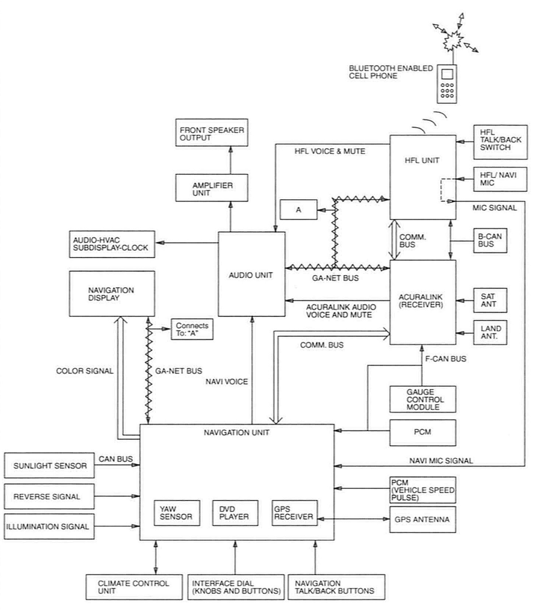

Navigation System: Description and Operation
How the Circuit WorksPower Supply
Fuse 5 (in the under-dash fuse/relay box) supplies battery voltage at all times to the navigation unit.
Fuse 7 (in the under-dash fuse/relay box) supplies battery voltage at all times to the navigation display.
Fuse 32 (in the under-dash fuse/relay box) supplies battery voltage with the ignition switch in the ACC (I) or ON (II) position to the navigation unit, the interface dial, and the navigation display.
System Description
The navigation unit, navigation display, and the interface dial are the main components of the navigation system. The navigation display does not have a touch panel. Instead, the interface dial and surrounding buttons and voice commands control the navigation system.
The navigation unit and navigation display communicate with each other through the GA-Net communication bus. The navigation unit generates the screen graphics, and passes them to the navigation display as Red, Green, and Blue (RGB) color signals, and a composite sync signal.
Voice Control System (Talk/Back buttons)
The voice control system is the primary method for the driver to communicate with the navigation system. The system consists of Talk and Back buttons located on the left steering wheel spoke. The microphone is in the roof console.
The audio speakers confirm commands and prompt the driver for additional inputs. The HandsFreeLink (HFL) control unit has its own Talk and Back switches (also on the steering wheel) that operate in a manner similar to the navigation switches.
Audio-HVAC-Subdisplay-Clock (Upper display)
The audio unit controls the audio, climate, and time data displayed on this device. The navigation unit updates the time and can be adjusted in the navigation "setup" menu.
Navigation Function
The navigation system utilizes the GPS signals obtained by the GPS antenna, the vehicle speed signal from the PCM, and the yaw rate sensor contained in the navigation unit to direct the user to the desired destination.
The GPS signals, the vehicle speed signal, and the yaw rate sensor (in the navigation unit) determine the position of the vehicle icon on the map. The navigation system relies on the DVD ROM for maps and points of interest (POI) in order to provide the user with the optimum route to the desired destination.
Route Guidance
When en route to a destination, the navigation system provides turn-by-turn map and voice guidance. The audio system outputs the navigation voice guidance prompts through the front speakers.
GPS Signal Reception
The GPS antenna obtains signals from up to 24 different satellites. The navigation unit powers the GPS antenna's amplifier with 5V through a coax cable. The GPS receiver in the navigation unit receives the amplified GPS signals through the same coax cable. The GPS receiver identifies the satellites and processes the different GPS signals. The navigation unit converts these signals to actual locations in order to determine the position of the vehicle.
Other Navigation Inputs
The sunlight sensor senses the ambient light and its input determines when to switch the display between the day and night display modes.
GA-NET
The GA-Net bus is an audio bus. The GA-Net bus connects the navigation unit, navigation display, audio unit, and XM receiver. This bus passes data including manual audio control functions, like XM station selection, audio voice commands from the driver, and the muting signal from the navigation unit.
COMM - BUS (AcuraLink and HFL)
The navigation system is fully integrated with the HandsFreeLink (HFL) control unit and with the XM receiver (Canada) and the AcuraLink control unit (XM receiver) (USA).
Data sent by the AcuraLink control unit (XM receiver) (USA) to the navigation unit include traffic information and AcuraLink messages. The HFL control unit utilizes the bus to transmit whether a bluetooth cell phone is currently paired, a navigation POI phone number to be dialed by the HFL control unit, and vehicle data to be transmitted up to the Acura servers.
F-CAN Communications
Fast Controller Area Network (F-CAN) multiplex network information is transmitted across the communication lines for "real time" functions such as vehicle speed, fuel, emissions, and traction control data.
B-CAN communications
B-CAN passes low speed vehicle functions between components such as audio and HFL information. See the same section as F-CAN above for troubleshooting information.
Climate Bus
The climate bus connects the navigation unit with the climate control unit. Data on this line consists of manual selections of mode, or fan speed, and voice control commands issued by the driver.
Muting
The audio unit orchestrates all muting logic. Ail voice commands are broadcast over the front audio speakers. The priority of the audio outputs are as follows: The HFL control unit, XM-AcuraLink messages, navigation voice, and the audio unit CD/DVD or AM-FM-XM music channels.
